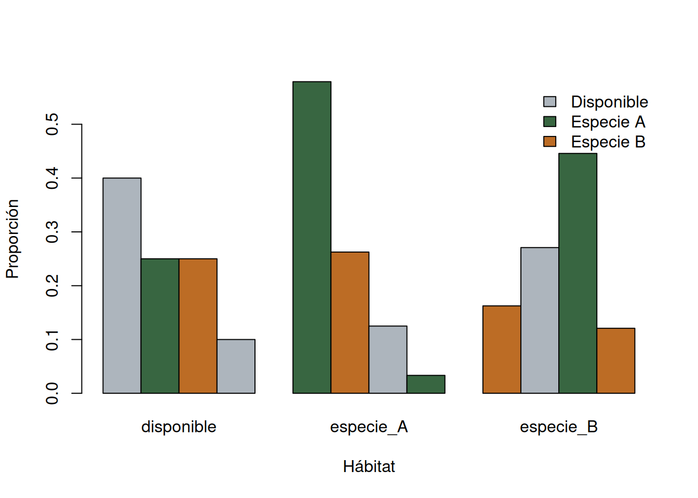
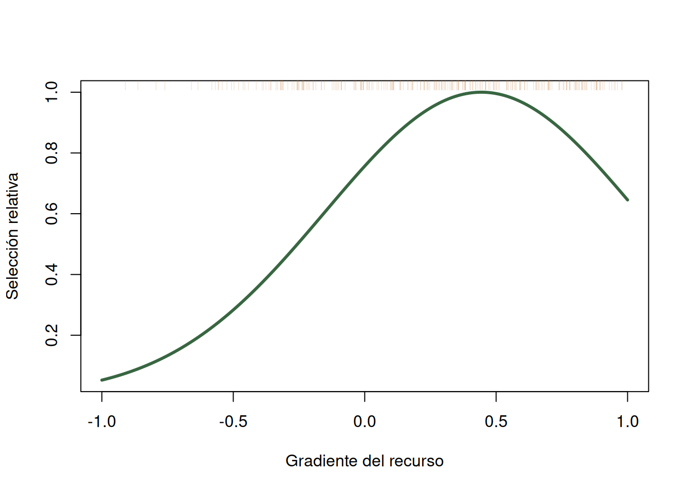
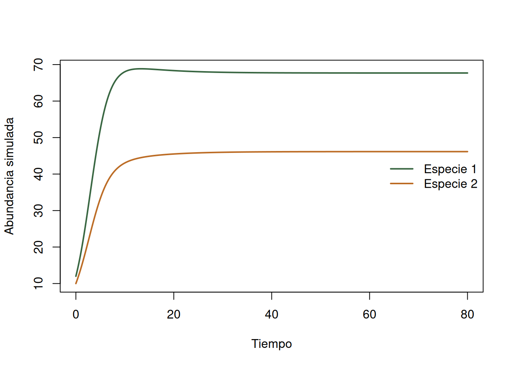
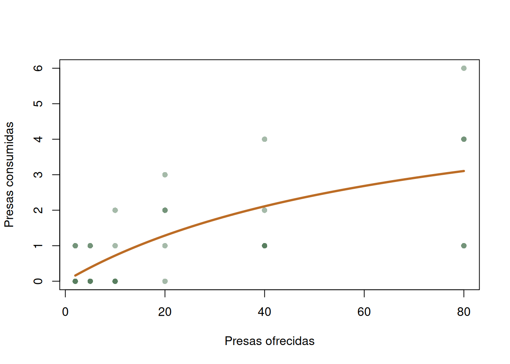
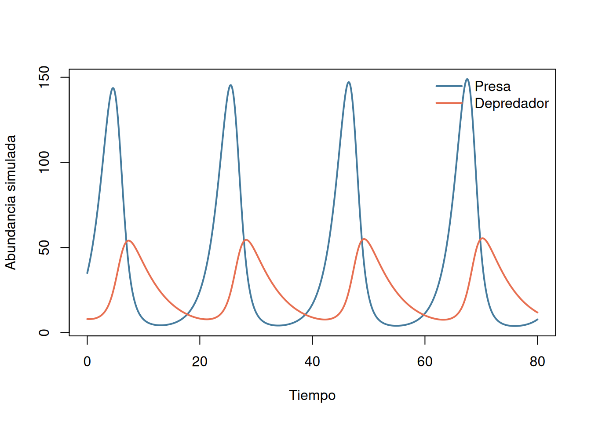

habitat <- c("bosque", "matorral", "pastizal", "humedal")
availability <- c(bosque = 0.40, matorral = 0.25,
pastizal = 0.25, humedal = 0.10)
use_A <- rbind(
A01 = c(18, 8, 3, 1), A02 = c(16, 9, 4, 1),
A03 = c(20, 6, 3, 1), A04 = c(17, 8, 4, 1),
A05 = c(15, 10, 4, 1), A06 = c(19, 7, 3, 1),
A07 = c(16, 8, 5, 1), A08 = c(18, 7, 4, 1))
use_B <- rbind(
B01 = c(5, 8, 14, 3), B02 = c(4, 9, 14, 3),
B03 = c(6, 7, 13, 4), B04 = c(5, 9, 12, 4),
B05 = c(4, 8, 15, 3), B06 = c(6, 8, 12, 4),
B07 = c(5, 7, 14, 4), B08 = c(4, 9, 13, 4))
colnames(use_A) <- colnames(use_B) <- habitat
audit_resources <- c(
species = 2, individuals = nrow(use_A) + nrow(use_B),
missing = sum(is.na(use_A)) + sum(is.na(use_B)),
negative = sum(use_A < 0) + sum(use_B < 0),
availability_sum = sum(availability),
unequal_fixes = sum(rowSums(use_A) != 30) + sum(rowSums(use_B) != 30)
)
audit_resources
#> species individuals missing negative
#> 2 16 0 0
#> availability_sum unequal_fixes
#> 1 0
stopifnot(audit_resources[c("missing", "negative", "unequal_fixes")] == 0,
isTRUE(all.equal(sum(availability), 1)))14 Uso de recursos e interacciones ecológicas
Selección, competencia, depredación y redes tróficas
Las interacciones no se observan todas de la misma manera. Una localización de un animal informa uso; un ensayo de alimentación informa consumo bajo condiciones controladas; una serie temporal mezcla procesos demográficos; y una matriz trófica registra vínculos detectados. En cada caso deben declararse la unidad, el universo disponible, el intervalo y el proceso de observación antes de atribuir un mecanismo (Manly et al. 2002; Begon et al. 2006).
14.1 Diseño y estimandos
Este capítulo distingue cuatro preguntas y sus estimandos:
- Selección: proporción de uso, razón selección/disponibilidad, amplitud y solapamiento para una población, periodo y definición de disponibilidad.
- Competencia: trayectoria y equilibrio que implica un modelo con parámetros dados; estimar sus coeficientes exigiría abundancias repetidas o un experimento.
- Depredación: consumo esperado frente a densidad de presas y dinámica condicional de presas y depredadores.
- Red trófica: número de vínculos, grados, conectancia, nivel trófico y omnivoría de una matriz consumidor-recurso definida.
ImportanteCoocurrencia no prueba competencia
Una asociación espacial negativa puede deberse a ambiente, detectabilidad, historia o dispersión; una asociación positiva puede persistir aunque haya competencia si ambas especies responden al mismo hábitat. La coocurrencia genera hipótesis, pero no identifica el signo ni la intensidad de una interacción. Para probar competencia se requieren predicciones mecanísticas y, cuando sea posible, manipulación, series temporales o controles de los factores compartidos.
14.2 Uso frente a disponibilidad
Sea \(u_j\) la fracción de registros usados en el recurso \(j\) y \(a_j\) su fracción disponible. La razón de selección es
\[ w_j=\frac{u_j}{a_j}. \]
\(w_j>1\) indica uso mayor que la disponibilidad definida, no preferencia innata. Cambiar el área accesible, la estación o la resolución cambia \(a_j\) y, por tanto, el estimando. Las localizaciones sucesivas tampoco son réplicas independientes: el individuo es la unidad para inferencia poblacional (Manly et al. 2002).
14.2.1 Datos didácticos, auditoría y exploración
Los siguientes conteos son datos didácticos explícitos, no un estudio real. Representan localizaciones de ocho individuos por especie durante una estación. La disponibilidad procede de una cartografía hipotética común del área accesible.
use_prop <- rbind(
especie_A = colSums(use_A) / sum(use_A),
especie_B = colSums(use_B) / sum(use_B)
)
barplot(t(rbind(disponible = availability, use_prop)), beside = TRUE,
col = c("#adb5bd", "#386641", "#bc6c25"),
ylab = "Proporción", xlab = "Hábitat",
legend.text = c("Disponible", "Especie A", "Especie B"),
args.legend = list(x = "topright", bty = "n"))
La gráfica compara escalas compatibles, pero no aporta todavía incertidumbre ni controla que los registros estén agrupados por individuo.
14.2.2 Razones, amplitud y solapamiento
La amplitud de Levins para proporciones de uso \(p_j\) es \(B=1/\sum p_j^2\). Su versión estandarizada \(B_A=(B-1)/(R-1)\) varía entre cero y uno para \(R\) recursos. El solapamiento de Pianka entre especies \(x\) y \(y\) es
\[ O_{xy}=\frac{\sum_j p_{xj}p_{yj}} {\sqrt{\sum_jp_{xj}^2\sum_jp_{yj}^2}}. \]
Ambos índices describen las categorías y disponibilidad estudiadas; no prueban competencia (Krebs 1999).
selection_ratio <- sweep(use_prop, 2, availability, "/")
levins_std <- function(p) {
p <- p / sum(p)
(1 / sum(p^2) - 1) / (length(p) - 1)
}
pianka <- function(x, y) sum(x * y) / sqrt(sum(x^2) * sum(y^2))
resource_estimates <- rbind(
selection_ratio,
amplitud = c(A = levins_std(use_prop[1, ]),
B = levins_std(use_prop[2, ]), NA, NA)
)
selection_ratio
#> bosque matorral pastizal humedal
#> especie_A 1.447917 1.050000 0.500000 0.3333333
#> especie_B 0.406250 1.083333 1.783333 1.2083333
c(amplitud_A = levins_std(use_prop[1, ]),
amplitud_B = levins_std(use_prop[2, ]),
solapamiento = pianka(use_prop[1, ], use_prop[2, ]))
#> amplitud_A amplitud_B solapamiento
#> 0.4582887 0.7312043 0.619549714.2.3 Incertidumbre por individuo
El bootstrap remuestrea individuos completos y conserva juntas sus localizaciones. La disponibilidad cartográfica se trata como fija; si procediera de una muestra, también habría que propagar su incertidumbre.
resource_metrics <- function(A, B, avail = availability) {
pa <- colSums(A) / sum(A)
pb <- colSums(B) / sum(B)
c(setNames(pa / avail, paste0("wA_", names(avail))),
setNames(pb / avail, paste0("wB_", names(avail))),
breadth_A = levins_std(pa), breadth_B = levins_std(pb),
overlap = pianka(pa, pb))
}
set.seed(1101)
B_boot <- 999
boot_resources <- replicate(B_boot, {
A_b <- use_A[sample(seq_len(nrow(use_A)), replace = TRUE), , drop = FALSE]
B_b <- use_B[sample(seq_len(nrow(use_B)), replace = TRUE), , drop = FALSE]
resource_metrics(A_b, B_b)
})
resource_ci <- t(apply(boot_resources, 1, quantile, c(.025, .5, .975)))
round(resource_ci, 3)
#> 2.5% 50% 97.5%
#> wA_bosque 1.354 1.448 1.542
#> wA_matorral 0.950 1.050 1.150
#> wA_pastizal 0.450 0.500 0.567
#> wA_humedal 0.333 0.333 0.333
#> wB_bosque 0.365 0.406 0.448
#> wB_matorral 1.017 1.083 1.150
#> wB_pastizal 1.700 1.783 1.867
#> wB_humedal 1.083 1.208 1.292
#> breadth_A 0.408 0.460 0.506
#> breadth_B 0.685 0.731 0.771
#> overlap 0.573 0.622 0.663Los intervalos reflejan heterogeneidad entre los individuos didácticos, no error cartográfico, selección de la población ni autocorrelación dentro del individuo.
14.2.4 Curva de selección simulada
Con un recurso continuo puede modelarse la selección relativa. Este bloque es una simulación: genera puntos disponibles y puntos usados con peso \(\exp(1.4x-1.8x^2)\). En un diseño uso-disponibilidad, la curva logística depende de cuántos puntos disponibles se muestrearon; su forma y razones son relativas, no probabilidades absolutas de uso.
set.seed(1102)
n_available <- 1000
n_used <- 250
x_available <- runif(n_available, -1, 1)
candidate <- runif(20000, -1, 1)
weights <- exp(1.4 * candidate - 1.8 * candidate^2)
x_used <- sample(candidate, n_used, replace = TRUE, prob = weights)
selection_data <- data.frame(
used = c(rep(0, n_available), rep(1, n_used)),
x = c(x_available, x_used)
)
selection_fit <- glm(used ~ x + I(x^2), family = binomial(), data = selection_data)
grid <- data.frame(x = seq(-1, 1, length.out = 200))
grid$relative_selection <- exp(predict(selection_fit, grid, type = "link"))
grid$relative_selection <- grid$relative_selection / max(grid$relative_selection)
plot(grid$x, grid$relative_selection, type = "l", lwd = 3, col = "#386641",
xlab = "Gradiente del recurso", ylab = "Selección relativa")
rug(x_used, side = 3, col = adjustcolor("#bc6c25", .25))
coef(summary(selection_fit))
#> Estimate Std. Error z value Pr(>|z|)
#> (Intercept) -1.150444 0.1013385 -11.352489 7.208150e-30
#> x 1.256527 0.1786403 7.033837 2.009294e-12
#> I(x^2) -1.415512 0.3082553 -4.592011 4.389960e-0614.2.5 Diagnóstico y sensibilidad de selección
Una omisión por individuo revela influencia; una disponibilidad alternativa revela dependencia del área accesible. Esta segunda comparación no es una prueba de cuál mapa es correcto.
loo_A <- t(vapply(seq_len(nrow(use_A)), function(i) {
p <- colSums(use_A[-i, , drop = FALSE]) / sum(use_A[-i, ])
p / availability
}, numeric(length(availability))))
colnames(loo_A) <- habitat
availability_alt <- c(bosque = .34, matorral = .28, pastizal = .28, humedal = .10)
sensitivity_resources <- rbind(
original = use_prop[1, ] / availability,
alternative_map = use_prop[1, ] / availability_alt,
loo_min = apply(loo_A, 2, min),
loo_max = apply(loo_A, 2, max)
)
round(sensitivity_resources, 3)
#> bosque matorral pastizal humedal
#> original 1.448 1.050 0.500 0.333
#> alternative_map 1.703 0.938 0.446 0.333
#> loo_min 1.417 1.010 0.476 0.333
#> loo_max 1.476 1.086 0.514 0.33314.3 Competencia interespecífica
El modelo de Lotka-Volterra para dos competidores es
\[ \frac{dN_1}{dt}=r_1N_1\left(1-\frac{N_1+\alpha_{12}N_2}{K_1}\right),\qquad \frac{dN_2}{dt}=r_2N_2\left(1-\frac{N_2+\alpha_{21}N_1}{K_2}\right). \]
\(\alpha_{12}\) expresa el efecto per cápita de la especie 2 en unidades de la especie 1. El modelo supone ambiente constante, mezcla homogénea y coeficientes fijos; no incluye estructura espacial, edades, recursos explícitos ni demora (Begon et al. 2006).
14.3.1 Simulación y equilibrio condicional
El integrador siguiente es Euler explícito y todas las trayectorias de esta sección son simulaciones, no ajustes a datos. Para coexistencia interior, \(N_1^*=(K_1-\alpha_{12}K_2)/(1-\alpha_{12}\alpha_{21})\) y análogamente para \(N_2^*\).
simulate_competition <- function(r, K, alpha, initial, dt = 0.02, duration = 80) {
time <- seq(0, duration, by = dt)
N <- matrix(NA_real_, length(time), 2,
dimnames = list(NULL, c("especie_1", "especie_2")))
N[1, ] <- initial
for (i in 2:length(time)) {
n <- N[i - 1, ]
growth <- c(
r[1] * n[1] * (1 - (n[1] + alpha[1] * n[2]) / K[1]),
r[2] * n[2] * (1 - (n[2] + alpha[2] * n[1]) / K[2])
)
N[i, ] <- pmax(0, n + dt * growth)
}
data.frame(time, N)
}
competition_parameters <- list(r = c(.55, .45), K = c(100, 80),
alpha = c(.7, .5), initial = c(12, 10))
competition <- do.call(simulate_competition, competition_parameters)
matplot(competition$time, competition[c("especie_1", "especie_2")], type = "l",
lty = 1, lwd = 2, col = c("#386641", "#bc6c25"),
xlab = "Tiempo", ylab = "Abundancia simulada")
legend("right", c("Especie 1", "Especie 2"), lty = 1, lwd = 2,
col = c("#386641", "#bc6c25"), bty = "n")
with(competition_parameters, c(
N1_star = (K[1] - alpha[1] * K[2]) / (1 - prod(alpha)),
N2_star = (K[2] - alpha[2] * K[1]) / (1 - prod(alpha))
))
#> N1_star N2_star
#> 67.69231 46.15385competition_coarse <- do.call(simulate_competition,
c(competition_parameters, list(dt = 0.2)))
competition_sensitivity <- rbind(
dt_002 = unlist(competition[nrow(competition), -1]),
dt_02 = unlist(competition_coarse[nrow(competition_coarse), -1]),
alpha_plus_10 = unlist(do.call(simulate_competition,
modifyList(competition_parameters,
list(alpha = 1.1 * competition_parameters$alpha)))[4001, -1])
)
round(competition_sensitivity, 3)
#> especie_1 especie_2
#> dt_002 67.693 46.153
#> dt_02 67.693 46.154
#> alpha_plus_10 66.610 43.364La concordancia entre pasos temporales diagnostica error numérico en este caso. Cambiar \(\alpha\) examina sensibilidad estructural, no incertidumbre estimada. Una serie observada exigiría un modelo de observación y réplicas para separar ruido de proceso y error de conteo.
14.4 Depredación y respuesta funcional
Las respuestas funcionales describen consumo por depredador durante un intervalo. Una forma tipo I es lineal, \(f(N)=aN\); la tipo II de Holling se satura,
\[ f(N)=\frac{aNT}{1+ahN}, \]
donde \(a\) es búsqueda, \(h\) tiempo de manejo y \(T\) duración. Una tipo III sustituye la búsqueda lineal por una dependencia sigmoidea, por ejemplo \(f(N)=aN^2T/(1+ahN^2)\). La elección no debe basarse solo en cuál curva parece más suave (Begon et al. 2006).
14.4.1 Ensayo de alimentación simulado
Se simulan cinco arenas por densidad con parámetros conocidos \(a=0.08\), \(h=0.12\) y \(T=1\). El conteo se limita por las presas ofrecidas. La arena es la réplica.
set.seed(1103)
feeding <- expand.grid(prey = c(2, 5, 10, 20, 40, 80), arena = 1:5)
true_a <- .08
true_h <- .12
feeding$expected <- with(feeding,
true_a * prey / (1 + true_a * true_h * prey))
feeding$eaten <- mapply(function(n, mu) {
rbinom(1, n, min(mu / n, .999))
}, feeding$prey, feeding$expected)
audit_feeding <- c(rows = nrow(feeding), missing = sum(is.na(feeding)),
impossible = sum(feeding$eaten < 0 | feeding$eaten > feeding$prey),
arenas_per_density = min(table(feeding$prey)))
audit_feeding
#> rows missing impossible arenas_per_density
#> 30 0 0 5
aggregate(eaten ~ prey, feeding, function(x) c(mean = mean(x), sd = sd(x)))
#> prey eaten.mean eaten.sd
#> 1 2 0.4000000 0.5477226
#> 2 5 0.4000000 0.5477226
#> 3 10 0.6000000 0.8944272
#> 4 20 1.6000000 1.1401754
#> 5 40 1.8000000 1.3038405
#> 6 80 3.2000000 2.1679483fit_type2 <- nls(eaten ~ a * prey / (1 + a * h * prey), data = feeding,
start = list(a = .05, h = .1), algorithm = "port",
lower = c(a = 1e-6, h = 1e-6))
summary(fit_type2)$coefficients
#> Estimate Std. Error t value Pr(>|t|)
#> a 0.08238516 0.03774624 2.182606 0.03761149
#> h 0.17037624 0.10013001 1.701550 0.09992039
feeding$fitted <- predict(fit_type2)
plot(eaten ~ prey, feeding, pch = 16, col = adjustcolor("#386641", .45),
xlab = "Presas ofrecidas", ylab = "Presas consumidas")
curve(coef(fit_type2)["a"] * x /
(1 + coef(fit_type2)["a"] * coef(fit_type2)["h"] * x),
add = TRUE, lwd = 3, col = "#bc6c25")
set.seed(1104)
arena_groups <- split(feeding, feeding$prey)
boot_functional <- replicate(499, {
z <- do.call(rbind, lapply(arena_groups, function(g)
g[sample(seq_len(nrow(g)), replace = TRUE), ]))
fit <- try(nls(eaten ~ a * prey / (1 + a * h * prey), data = z,
start = as.list(coef(fit_type2)), algorithm = "port",
lower = c(a = 1e-6, h = 1e-6)), silent = TRUE)
if (inherits(fit, "try-error")) c(a = NA, h = NA) else coef(fit)
})
t(apply(boot_functional, 1, quantile, c(.025, .5, .975), na.rm = TRUE))
#> 2.5% 50% 97.5%
#> a 0.04269563 0.08502883 0.2060680
#> h 0.00000100 0.16906093 0.4606595
functional_diagnostics <- c(
residual_mean = mean(residuals(fit_type2)),
residual_sd = sd(residuals(fit_type2)),
residual_prey_correlation = cor(residuals(fit_type2), feeding$prey),
failed_bootstrap = sum(!complete.cases(t(boot_functional)))
)
round(functional_diagnostics, 3)
#> residual_mean residual_sd residual_prey_correlation
#> 0.038 1.141 -0.029
#> failed_bootstrap
#> 0.000Los residuos y fallos de convergencia deben informarse. Estos intervalos reflejan variación entre arenas dentro de cada densidad simulada; no incluyen depredadores, temperaturas o duraciones nuevas.
14.4.2 Modelo presa-depredador
El modelo clásico usa
\[ \frac{dN}{dt}=rN-aNP,\qquad \frac{dP}{dt}=eaNP-mP. \]
Los parámetros del bloque siguiente son supuestos para simulación. El modelo no incorpora capacidad de carga, saturación ni estocasticidad.
simulate_predator_prey <- function(r, a, e, m, initial, dt = .01, duration = 80) {
time <- seq(0, duration, by = dt)
X <- matrix(NA_real_, length(time), 2,
dimnames = list(NULL, c("presa", "depredador")))
X[1, ] <- initial
for (i in 2:length(time)) {
x <- X[i - 1, ]
change <- c(r * x[1] - a * x[1] * x[2],
e * a * x[1] * x[2] - m * x[2])
X[i, ] <- pmax(0, x + dt * change)
}
data.frame(time, X)
}
pp <- simulate_predator_prey(r = .6, a = .025, e = .2, m = .2,
initial = c(35, 8))
matplot(pp$time, pp[c("presa", "depredador")], type = "l", lty = 1,
lwd = 2, col = c("#457b9d", "#e76f51"),
xlab = "Tiempo", ylab = "Abundancia simulada")
legend("topright", c("Presa", "Depredador"), lty = 1, lwd = 2,
col = c("#457b9d", "#e76f51"), bty = "n")
El desfase entre máximos es una predicción del modelo, no evidencia suficiente de depredación en una serie real. Una sensibilidad útil compara pasos temporales y una respuesta tipo II; si cambia la persistencia, la conclusión depende de la forma funcional elegida.
14.5 Relaciones tróficas como matriz consumidor-recurso
La matriz \(M\) tendrá consumidores en filas y recursos en columnas; \(M_{ij}=1\) si el consumidor \(i\) consume el recurso \(j\). Los datos siguientes son una red didáctica explícita, no observaciones de campo.
taxa <- c("pasto", "insecto", "conejo", "rana", "zorro", "halcon")
web <- matrix(0L, length(taxa), length(taxa), dimnames = list(
consumidor = taxa, recurso = taxa))
web[cbind(c("insecto", "conejo", "rana", "zorro", "zorro", "halcon", "halcon"),
c("pasto", "pasto", "insecto", "conejo", "rana", "conejo", "rana"))] <- 1L
audit_web <- c(taxa = nrow(web), links = sum(web), missing = sum(is.na(web)),
nonbinary = sum(!web %in% 0:1), self_links = sum(diag(web)))
audit_web
#> taxa links missing nonbinary self_links
#> 6 7 0 0 0
stopifnot(audit_web[c("missing", "nonbinary", "self_links")] == 0)
web
#> recurso
#> consumidor pasto insecto conejo rana zorro halcon
#> pasto 0 0 0 0 0 0
#> insecto 1 0 0 0 0 0
#> conejo 1 0 0 0 0 0
#> rana 0 1 0 0 0 0
#> zorro 0 0 1 1 0 0
#> halcon 0 0 1 1 0 0El grado de entrada aquí es el número de recursos de un consumidor (generalidad), y el grado de salida es el número de consumidores de un recurso (vulnerabilidad). Con \(S\) taxones, sin autoconsumo posible, \(C=L/[S(S-1)]\). Otra convención usa \(S^2\); siempre debe declararse (Dormann et al. 2008).
S <- nrow(web)
L <- sum(web)
degree_table <- data.frame(
taxon = taxa,
resources = rowSums(web),
consumers = colSums(web)
)
connectance <- L / (S * (S - 1))
# Red acíclica didáctica: basales en 1; consumidores, 1 + media de sus recursos.
trophic_level <- setNames(rep(NA_real_, S), taxa)
trophic_level[colSums(web) > 0 & rowSums(web) == 0] <- 1
for (iteration in seq_len(S)) {
for (consumer in taxa[rowSums(web) > 0]) {
resources <- names(which(web[consumer, ] == 1))
if (all(!is.na(trophic_level[resources])))
trophic_level[consumer] <- 1 + mean(trophic_level[resources])
}
}
omnivory <- sapply(taxa, function(consumer) {
resources <- names(which(web[consumer, ] == 1))
if (length(resources) < 2) return(0)
var(trophic_level[resources])
})
degree_table$trophic_level <- trophic_level[degree_table$taxon]
degree_table$omnivory <- omnivory[degree_table$taxon]
degree_table
#> taxon resources consumers trophic_level omnivory
#> pasto pasto 0 2 1.0 0.0
#> insecto insecto 1 1 2.0 0.0
#> conejo conejo 1 2 2.0 0.0
#> rana rana 1 2 3.0 0.0
#> zorro zorro 2 0 3.5 0.5
#> halcon halcon 2 0 3.5 0.5
c(links = L, connectance = connectance)
#> links connectance
#> 7.0000000 0.233333314.5.1 Detección y sensibilidad de la red
En campo, un cero puede ser interacción no detectada. Los conteos siguientes son didácticos para doce visitas; el umbral define qué vínculos entran en la red.
interaction_counts <- matrix(0L, S, S, dimnames = dimnames(web))
interaction_counts[web == 1] <- c(9, 7, 6, 4, 2, 5, 1)
network_metrics <- function(counts, threshold) {
A <- 1L * (counts >= threshold)
diag(A) <- 0L
c(threshold = threshold, links = sum(A),
connectance = sum(A) / (nrow(A) * (nrow(A) - 1)),
mean_resources = mean(rowSums(A)),
isolated = sum(rowSums(A) + colSums(A) == 0))
}
network_sensitivity <- t(vapply(1:3, function(k)
network_metrics(interaction_counts, k), numeric(5)))
network_sensitivity
#> threshold links connectance mean_resources isolated
#> [1,] 1 7 0.2333333 1.1666667 0
#> [2,] 2 6 0.2000000 1.0000000 0
#> [3,] 3 5 0.1666667 0.8333333 1Elevar el umbral elimina vínculos raros y reduce conectancia. No demuestra que esos vínculos sean falsos: muestra dependencia del esfuerzo y la regla de clasificación. Comparar redes exige estandarizar visitas, métodos, taxonomía y periodo, o modelar explícitamente detección.
14.6 Interpretación integrada
- Selección compara uso con una disponibilidad definida; no basta informar uso.
- Amplitud y solapamiento son índices descriptivos sensibles a categorías, disponibilidad y escala. Solapamiento alto no demuestra competencia.
- Lotka-Volterra hace explícitas hipótesis y escenarios, pero sus coeficientes no se deducen de una correlación o una sola trayectoria.
- Una respuesta funcional requiere densidades manipuladas, réplicas y un intervalo común; el modelo presa-depredador añade supuestos demográficos.
- Grado, conectancia, nivel trófico y omnivoría dependen de la orientación de la matriz, la resolución taxonómica y los vínculos detectados.
- Simulación, estimación y observación deben rotularse por separado.
14.7 Actividad propuesta
- Cambie la disponibilidad del bosque entre 0.30 y 0.50, redistribuyendo la diferencia entre matorral y pastizal. Grafique cómo cambia \(w_{bosque}\).
- Simule competencia con \(\alpha_{12}=1.4\) y \(\alpha_{21}=0.5\) desde tres condiciones iniciales. Distinga exclusión estable de dependencia inicial.
- Compare residuos de respuestas funcionales tipo I y II para
feeding; evite decidir solo con \(R^2\) y discuta saturación y límites biológicos. - Añada el vínculo
halcon -> insecto, recalcule niveles y omnivoría y explique por qué una sola interacción altera más que el número de vínculos. - Diseñe un estudio capaz de separar competencia de respuestas compartidas al ambiente. Defina unidad, réplica, manipulación o serie, observación e incertidumbre.